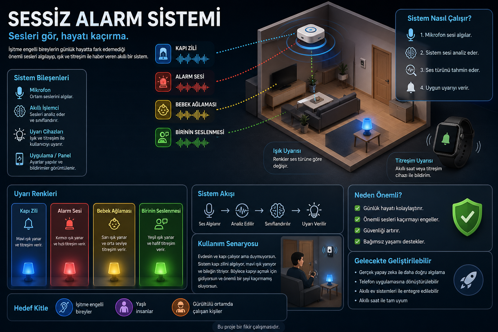

Bu sayfa, işitme sıkıntısı olan kişiler için sesleri daha kolay fark etmeye yarayan bir projenin ne olduğunu anlatıyor. Anlaşılır, samimi ve doğal bir dil kullandık.
Bu proje, yapay zeka destekli ses tanıma fikriyle tasarlandı. Sistem akıllı bir şekilde sesleri ayırt etmeye çalışıyor.
Sesleri gör, hayatı kaçırma.

Projeye ait örnek alan ve ses uyarı sistemi gösterimi.
Profesyonel olmayan kullanıcılar için bile anlaşılır şekilde çalışır; sesleri görsel uyarılarla bildirir.
Kapı zili, alarm, bebek ağlaması gibi yaygın sesleri ayırt etmek için tasarlandı.
Cihaz, evde ya da ofiste kolayca kullanılabilir; gece ve gündüz için farklı modlar planlanabilir.
Günlük hayatta sesleri kaçırmak normal ama zor oluyor. Kapı çalınca fark edememek, alarmı duymamak ya da birinin seslenmesini kaçırmak herkes için sıkıntı.
Bu proje, yapay zeka destekli ses tanıma fikriyle çalışıyor. Sesleri algılayıp ne tür ses olduklarını tahmin ediyor ve kullanıcıyı görsel, titreşimli şekilde uyarıyor.
Evdesin ve kapı çalıyor ama duymuyorsun. Sistem bu sesi fark eder, ışık ya da titreşimle sana bildirir. Böylece kapıyı kaçırmaz ve daha rahat bir gün geçirirsin.
Bu proje, günlük hayatı kolaylaştırmak için tasarlandı. Sesleri kaçırmamak, daha güvenli hissetmek ve daha bağımsız yaşamak için faydalı olabilir.
Projede yapay zeka ses sınıflandırması, hızlı algoritmalar ve basit donanım kullanılarak daha akıllı ve erişilebilir bir sistem hedefleniyor.
Bu projeyi daha büyük bir platforma taşımak için adım adım bir yol hazır. Prototip, mobil entegrasyon ve kullanıcı testi aşamalarıyla genişleyebilir.